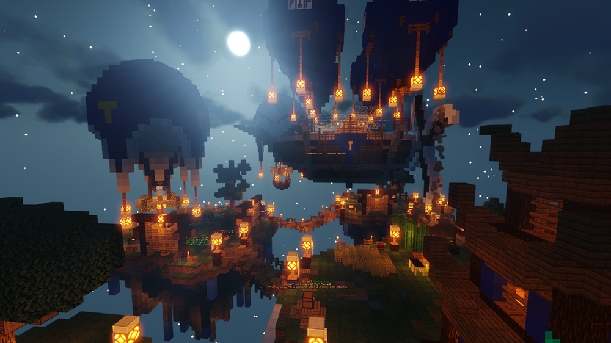
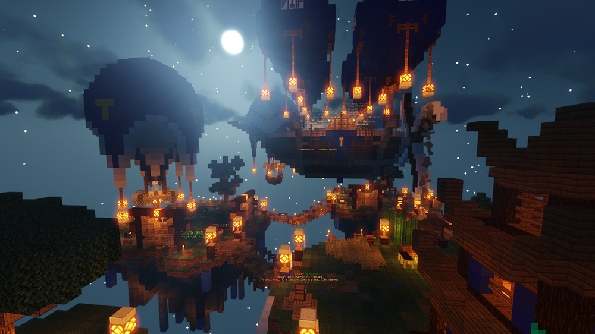

Informace
Skyblock & Slimefun. Potřebuješ vědět více? Jsme TerminusCraft Minecraft server s historií a letitými zkušenostmi. Naším cílem je vytvoření prostoru pro milovníky minecraftu, kde si dotyční budou hru moci pořádně užít. Naše servery běží na VDS (virtuálním dedikovaném serveru) poskytovaném skrze portál gamehosting.cz, kde máme k dispozici vysoce výkonný procesor typu AMD Ryzen 9 3900X s frekvencí až 4.6 GHz. Tyto servery jsou dále zabaleny do softwaru Pterodactyl, který umožňuje skvělý přehled a kontrolu nad veškerým děním. Toto vše se odehrává na operačním systému Alpine Linux, který je znám svou vysokou bezpečností a nízkou náročností.
Jak se připojit a hrát?
Jednoduše
Chceš si prohlédnou náš admin team?
Zde
Máš zájem nás podpořit v tom, co děláme?
Tady
Nebo se k nám připojit na discord a pokecat?
Bez problému
Líbí se ti náš server a chceš, aby se o něm dozvědělo více lidí?
Hlasuj


 
